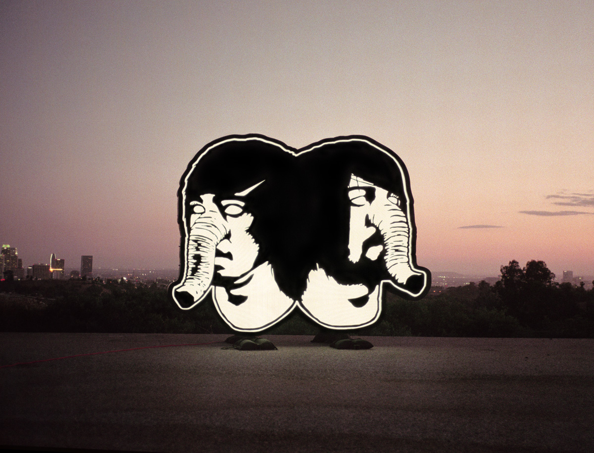
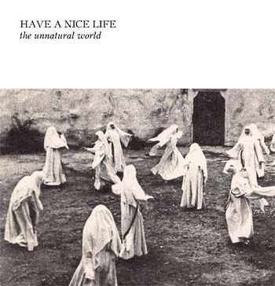

Continuamos con la segunda y última parte de los Tops Interncionales que ya comenzamos aquí. Los 10 mejores discos del año según los redactores de SBS son los siguientes:
–
10. Antemasque – Antemasque
 | Cedric y Omar han demostrado que cuando quieren, pueden; y es que sin necesidad de estrafalarios alardes ni devaneos avant-garde como el último disco de The Mars Volta, son capaces de hacer rock con mayúsculas. Un disco lleno de estribillos memorables, espíritu desenfadado y lleno de guitarrazos con aromas post-punk. Leer reseña. Leer reseña |
—
9. The Flaming Lips – 7 Skies H3
 | Es un placer ver cómo un dúo con una propuesta tan absolutamente personal y difícil de asimilar suda un poco de tinta para adecuarla a los oídos más casuales. De la versión añeja de 2011 de veinticuatro horas The Flaming Lips nos ofrecen una versión editada de 7 Skies H3 que apenas araña la hora de duración. Un trabajo de síntesis exquisito de un opus que refleja el lado íntimo, solitario, preciosista y espacial de la banda. |
—
8. Monuments – The Amanuensis
 | Sin distanciarse mucho de las pautas que John Browne venía marcando desde sus tiempos en Fellsilent, parece que por fin han dado con la tecla al poner a las voces a Chris Barretto (ex-Periphery, The HAARP Machine, …) y es que su trabajo en este cd, tanto en composición como en ejecución, es impresionante. Un álbum redondo que les permite situarse entre los grandes del metal progresivo moderno. |
—
7. Amerigo Gazaway – Yasiin Gaye: The Departure
{kind=link}
—
6. Indian – From All Purity
 | Si Thou nos dejaron boquiabiertos con su crudeza emocional, Indian han llegado a esta lista con uno de los discos de doom más absolutamente jodidos que podemos recordar. Todo desde los salvajes riffs de guitarra a las capas discretas pero palpables de samplers son de un odio virulento que solo es superado por una de las actuaciones vocales más desquiciadas y vitriólicas que jamás se han grabado en disco. Leer reseña |
—
5. Death From Above 1979 – The Physical World
|  | Nos han hecho esperar 10 años, pero ha merecido la pena. El dúo canadiense nos ha entregado un disco para bailar hasta desgastar la suela de las zapatillas, lleno de energía y buenas melodías que dan sentido a la etiqueta dance-punk, capaz de hacernos sentir (a algunos carcas) un poquito más jóvenes. Leer reseña |
{kind=link}
—
4. ††† – †††
 | De acuerdo. Es cierto que dos terceras partes del disco son temas de los anteriores EP, pero compilado todo en un único trabajo genera un volumen de calidad al alcance de pocos. Qué buen gusto tiene Chino Moreno y Shaun López para sacar a flote sus influencias del pop de sintetizadores de los 80 sin cometer el error de convertirse en un cliché de época. |
—
3. Thou – Heathen
| La culminación hasta la fecha de una carrera incansable que dura ya casi diez años, Heathen es donde confluyen la musicalidad aplastante del sludge y la pasión desbocada y terrible de una banda que tiene en las miserias de la vida moderna una fuente inagotable de combustible emocional. Pincha este disco y siéntate a disfrutar de cómo el mundo avanza hacia su merecido final. Leer reseña |
{kind=link}
—
2. Have A Nice Life – The Unnatural World
|  | Hemos visto la fama del proyecto liderado por Dan Barrett crecer y crecer, y hemos sido testigos del revuelo generalizado. Ellos mismos han sido los primeros en sorprenderse. Por eso esta nueva entrega ha de servir como toque de atención: más Have a nice life, más centrado y con más criterio en la selección de temas. Y en consecuencia, un mensaje claro desde sus filas: más música y menos habladurías. Leer reseña |
{kind=link}
—
1. Swans – To Be Kind
{kind=link}
—
Mención de honor: Babymetal – Babymetal
| Sí, tenemos claro que son un producto comercial pero ante algo así tan bien hecho es difícil resistirse. Hasta el antisistema más convenicido le ha estado rico alguna vez una hambuerguesa del McDonalds. Tres lolitas góticas, coreografías rigurosamente entrenadas, escenografía de presupuesto, estribillos pegadizos, riffs metaleros convincentes, guiños al dios zorro y sexualidad velada… En Japón sí que saben venderte las cosas. Leer artículo especial |
{kind=link}
{kind=link}
Apoyános